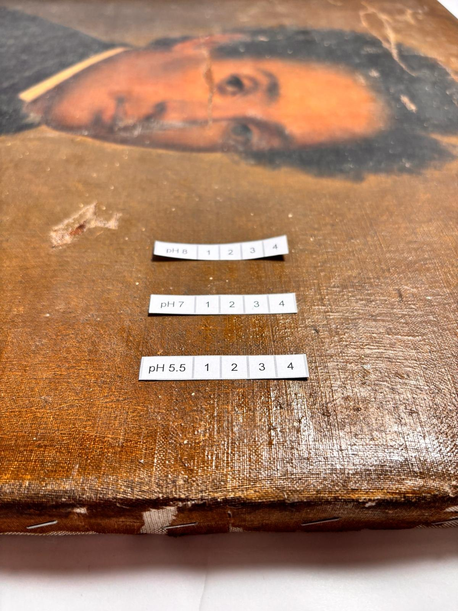
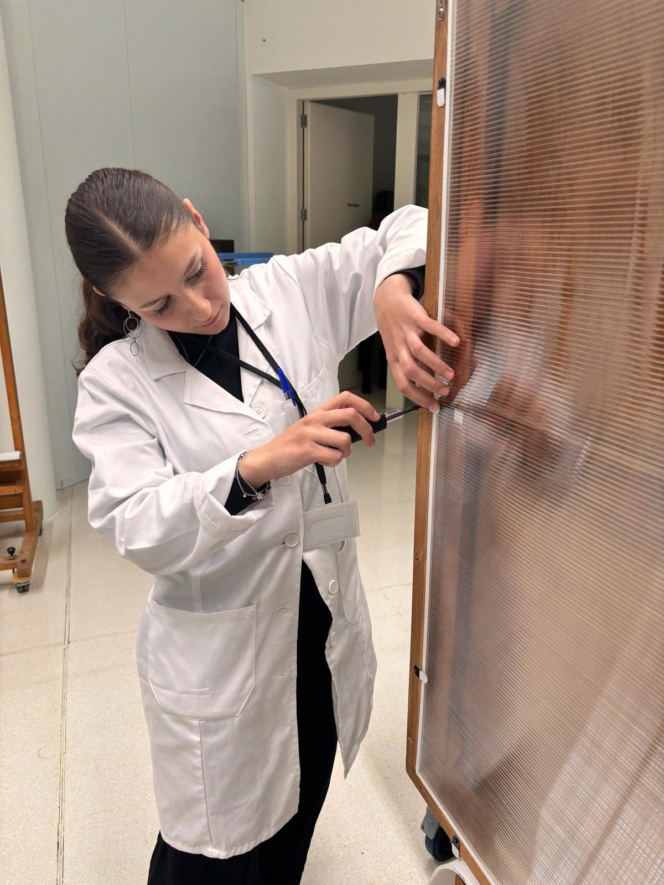

Materia con memoria.
IRISRESTAURA reúne procesos de restauración, documentación e intervención sobre obra pictórica y soportes históricos, con una mirada técnica, sensible y limpia.





El gesto justo, en el lugar exacto.
Una restauración no va de borrar el tiempo. Va de entenderlo. Cada pieza exige observar, documentar, probar y actuar con precisión para devolver legibilidad sin inventarse lo que la obra no pide.
Estudio personal
Esta web funciona como portfolio vivo: una selección de procesos, detalles y resultados de Iris en su camino como conservadora-restauradora.
Iris está finalizando sus estudios de restauración y empieza a desarrollar intervenciones propias, combinando sensibilidad por la obra, método de taller y una atención especial al detalle.

Trabajos seleccionados
La clave aquí no es enseñar solo la pieza final. Es enseñar criterio: estado de conservación, pruebas, intervención y resultado.

Retrato sobre lienzo
Intervención sobre pintura de caballete con alteraciones visibles en superficie, pérdidas puntuales y zonas de lectura interrumpida.
El proyecto se plantea desde la documentación previa, pruebas controladas y una reintegración ajustada al estado real de la obra.
Marco y soporte
Además de la obra pictórica, el trabajo sobre soporte y marco aporta coherencia al conjunto: estabilización, retoque localizado y recuperación visual sin forzar una apariencia artificial.
Proceso
Una web de restauración tiene que oler a método. Si solo enseña fotos bonitas, parece hobby. Si enseña proceso, empieza a parecer oficio.
Observación
Lectura del estado de conservación, patologías visibles y comportamiento de la superficie.
Pruebas
Ensayos previos y controlados para definir una intervención compatible y segura.
Intervención
Limpieza, consolidación o reintegración en función de lo que pide cada pieza.
Documentación
Registro visual del antes, durante y después para explicar el proceso con claridad.
Galería de trabajos


¿Tienes una pieza que necesita mirada?
Para consultas, encargos pequeños o seguimiento de nuevos trabajos, puedes contactar con Iris a través de Instagram o correo.